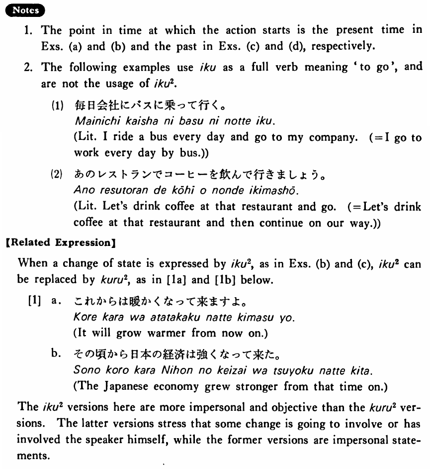

←
DoJG
→
行く・いく (2)
(B. 151)
Example sentences
(ks).
これからは寒くなって
行く・行きます
よ。
It will get colder (and continue to be that way) from now on.
(a).
これからは毎日本を一冊読んで
行く
つもりです。
I intend to keep reading one book a day from now on.
(b).
これからは暖かくなって
行きます
よ。
It will grow warmer (and continue in that way) from now on.
(c).
その頃から日本の経済は強くなって
行った
。
The Japanese economy grew stronger (and continued to grow that way) from that time on.
(d).
分からないことをノートに書いて
行った
。
I went on taking notes on things I didn't understand.
Formation
Vて
行く
話して
行く
Someone continues to talk
食べて
行く
Someone continues to eat
